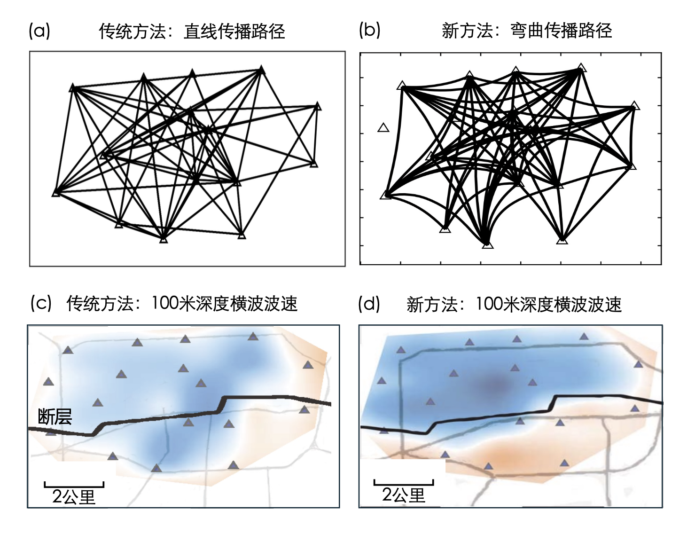
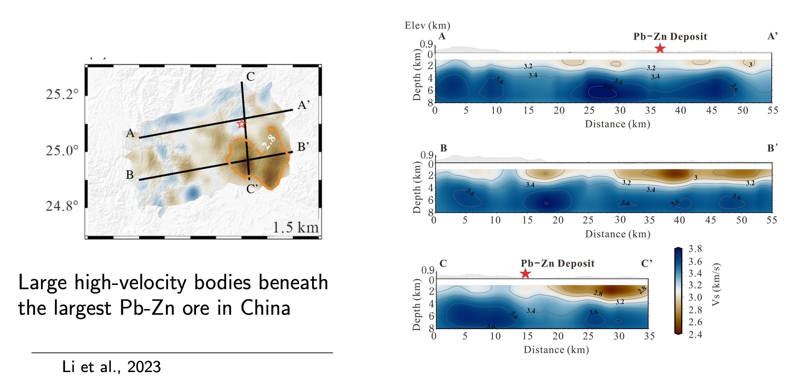
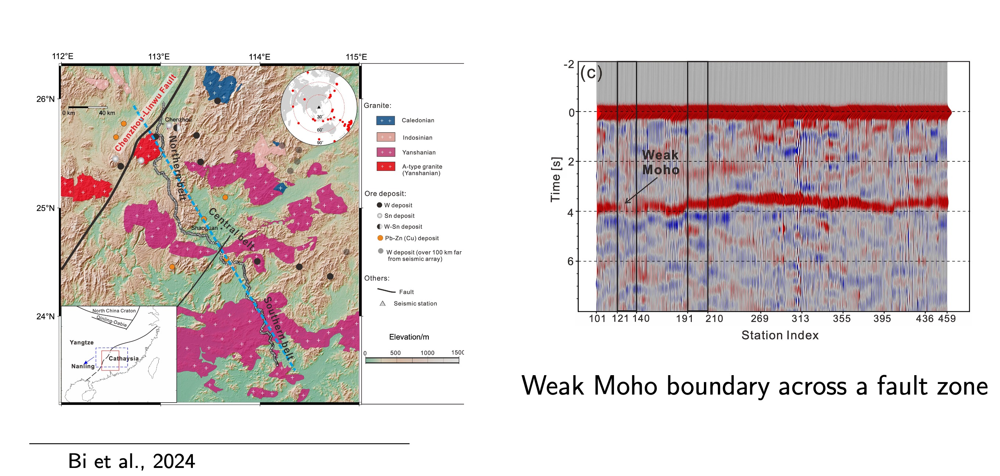
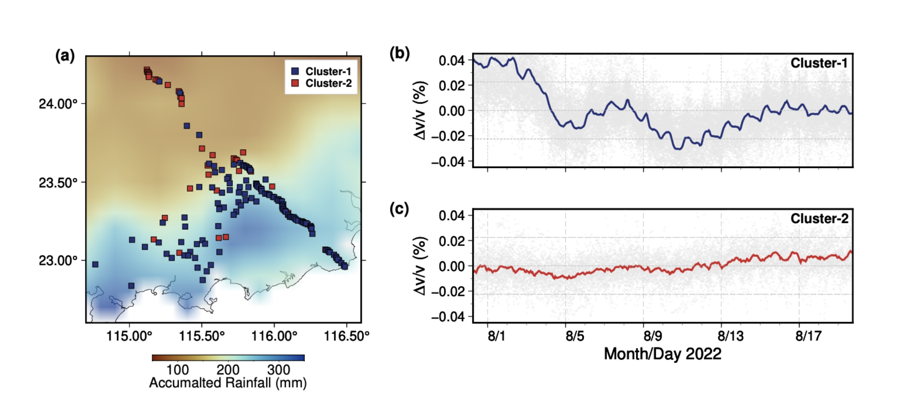
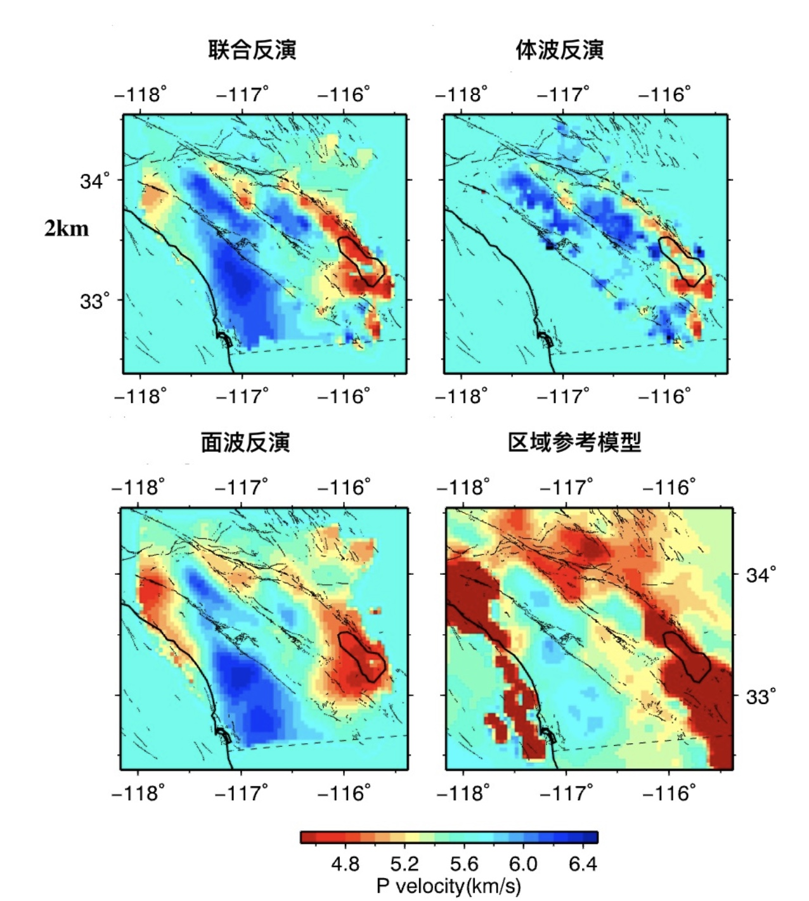
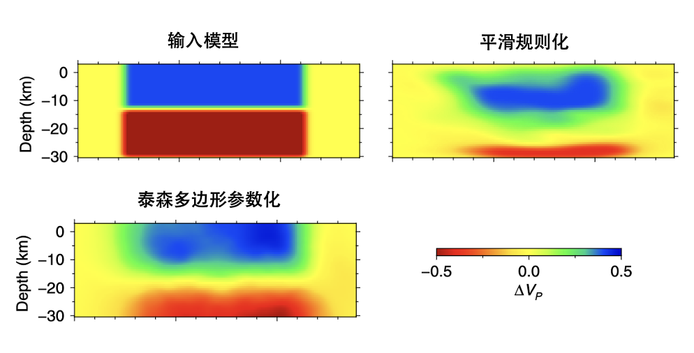

PARSIMONS Lab
Passive And Reliable Seismic Imaging and Monitoring Of the Near Surface

Passive And Reliable Seismic Imaging and Monitoring Of the Near Surface

发展基于射线追踪的面波数据直接反演方法，该方法可以考虑短周期面波的非大圆路径传播效应，可获得更加可靠的剪切波波速结构模型 (Fang et al., 2015)。

面波直接反演方法已在不同尺度结构成像中获得广泛应用，如在南岭成矿带的应用中发现凡口矿周缘6公里以下深度存在高速异常体（Vs>3.6km/s)，推测为基性侵入岩体 (Li, Fang et al., 2023)。

密集台阵接收函数成像显示成矿带、断裂的莫霍面及壳内间断面结构，为研究成矿背景及区域构造演化提供证据 (Bi, Fang et al., 2024)。

基于背景噪声监测区域速度结构变化 (Luo, Fang et al., in prep)。

基于体波面波数据互补性的联合反演方法及其在美国南加州地区的应用 (Fang et al., 2016)。

泰森多边形参数化可避免传统成像方法中阻尼及平滑规则项的选取，可以在任意区域根据数据约束加密，获得更稳定的模型。